Cromaine District Library: Website Redesign
Created a website redesign prototype of the library's website - both desktop and mobile versions - to increase ease of use, accessibility, and connectivity to the community.
Client
Cromaine District Library, in the semi-rural community of Hartland Michigan
Project Type/Services
User Needs Evaluation: UX Research and Design
Date
January - April 2022
Project Roles
Usability Researcher/Tester; UX Researcher and Designer
Project Overview
- The client. a public library in a smaller semi-rural community in Michigan, which serves as the information and cultural hub of its geographic area, sought a user needs evaluation and a user experience design consultation to be able to provide the best web-based experience for the community. The current site struggled with accessibility, technical problems loading on some devices, jargony language which often frustrated patrons, and a confusing, overstimulating layout which stymied patrons in their search for information. Given the central role this public library plays in connecting citizens to information and to each other via community events and activities, it was hoped that a major-overhaul of the website would better serve all sectors of the community, from children/teens to young adults, to the elderly.
- The client partnered with the University of Michigan's School of Information (UMSI) Design Clinic, a competitive (via application) UX design experience, which provides small interdisciplinary teams of students the opportunity to work with clients "to seek innovative solutions to information challenges." I worked as a Needs and Usability Researcher, and UX Researcher and Designer on the project.
- Our team redesigned the information architecture and most-used pages of the website to make it less overwhelming, confusing, and unwieldy to navigate, enhancing its ability to connect patrons to information, events and resources outside of the library walls.
- High Fidelity Prototype ⬈
Cromaine Website Redesign: Pre and Post Redesign


Project Execution
Research, Design and Development Roadmap

Research Methods and Key Findings
Analyzed the current site using Google Analytics
- Devices used to access the website: While the majority (62.4%) of library patrons accessed the website using a desktop device, more than a third (35.7%) relied on their mobile device, with the remaining patrons using a tablet (1.9%), highlighting the need to redesign the website with attention to both desktop and mobile applications.
- User age demographics: The library website was found to be visited by a wide age-range of patrons, from age 18 to 65+, in equal measure, with the exception of patrons ages 35-44 years, who were the most frequent users. The website's design must, then, be accessible and useable by this full developmental range.
- Pageviews by content: Over half of the visits to the website were to the homepage (53%), with much of the remaining visits focused on the summer reading program (15%) and the events/calendar (9%) pages. Because they are the most visited pages, we focused our redesign efforts on the Homepage and Events/Calendar pages. It became clear in our interview and survey user data, however, that the infrequency of visits to certain pages (e.g., those connecting patrons to desired digital resources and services) reflected design barriers to those pages, not lack of user interest. Survey/interview data (described below) highlighted the need to further focus redesign efforts on Digital Resources pages (e.g., connecting patrons to external sites and resources they can access with their Cromaine library card).
Collected and analyzed user survey (quantitative) data
- What type of device do you typically access the library website on?: 45% mobile, 19% two or more devices; 32% desktop/laptop; 3% tablet. The data reinforces the importance of attention to design for mobile devices, which had not been a priority for the existing website.
- How frequently do you use the Cromaine District library website? Data indicated high use, underscoring its important role in the community as an information hub, with about 5% of users visiting daily, almost 30% 3-4 times/week, and approximately 45% 3-4 times/month.
- What do you use the library website for the most?

Qualitative interview and survey data collection and analysis
- Patrons, while valuing the library and its services highly, repeatedly expressed a range of frustrations with the website, including:
- Finding it confusing to execute even the simplest of tasks (e.g. finding a book).
- Being visually overwhelming.
- Lacking an intuitive, easy-to-learn design.
In the library users' own words
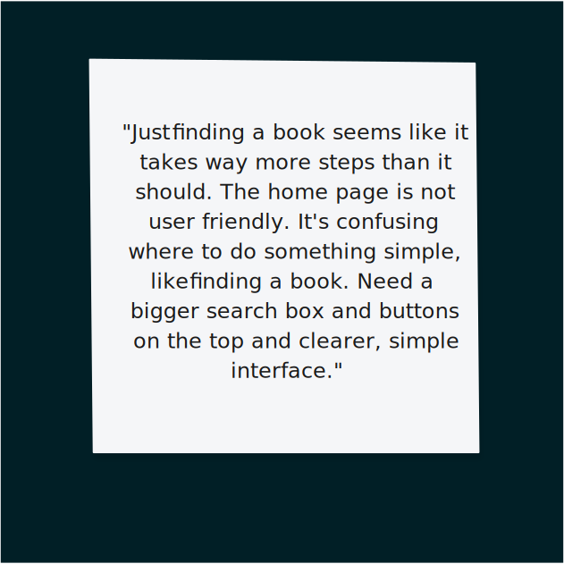
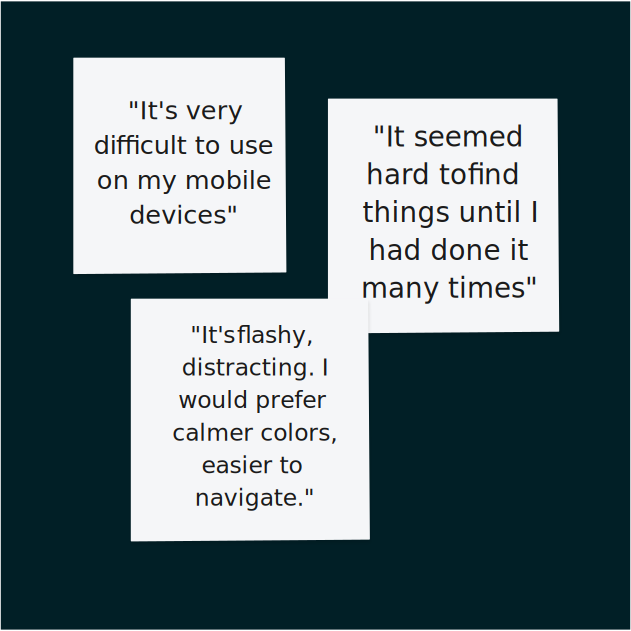
 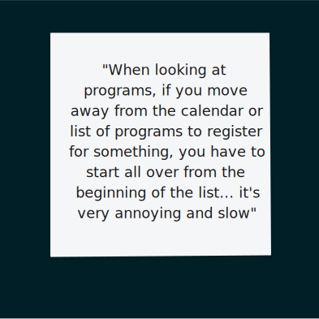
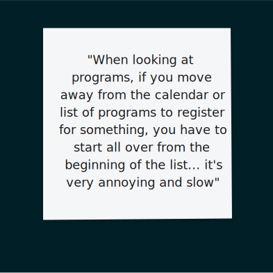
Key Design Goals and Website Redesign
- The website needs to be easier to navigate
- Frequently visited pages and important information need to be easier to find.
- The information architecture of thee main navigation menu needs to be reorganized so patrons can find things with less difficulty.
- The website has to be more accessible
- Fonts, color contrasts, and assets like the picture carousel on the homepage need to be altered to meet accessibility standards.
- Patrons with disabilities and those included in older demographics should still find the website easy to use.
Branding
- For our prototype, we developed and used an updated typography scale and color palette, to enhance visual appeal and clarity of information.
 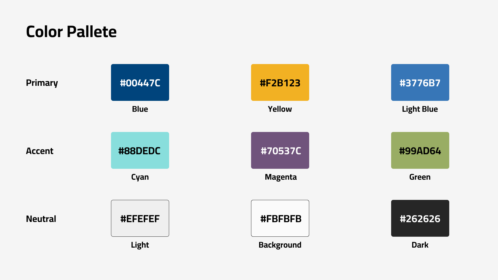
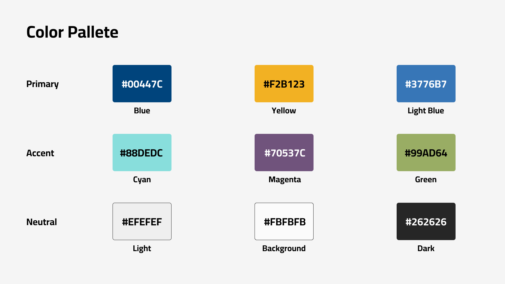
The Main Navigation and Information Architecture
- Instead of requiring the user to view all of the links from one visually overwhelming dropdown menu, in the redesign, we made the navigation bar simpler and more discoverable.
- We removed redundant links.
- We reworded navigation items to make them more user-friendly.
- We refreshed the visual design of header and footer.
- We put links where users were more likely to expect them.
Before
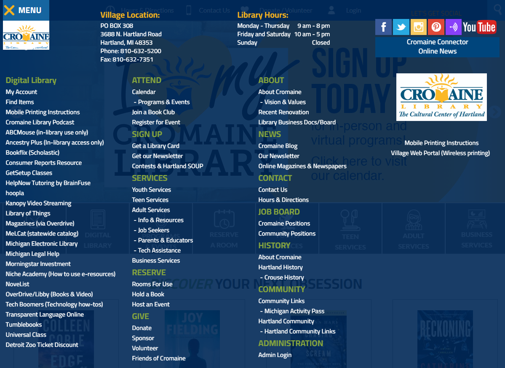After
Header (after)
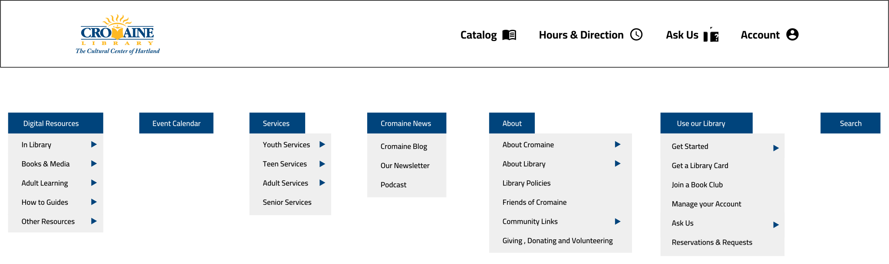Footer (after)
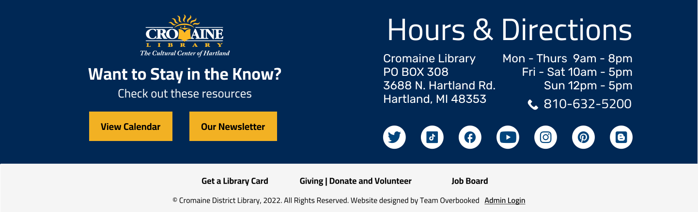Search Function
- We made it easier to use the site's search feature, which was one of the most used but most difficult to find features on the website, by positioning the search to the right side of the nav bar and having it dropdown below the nav bar when it was active.
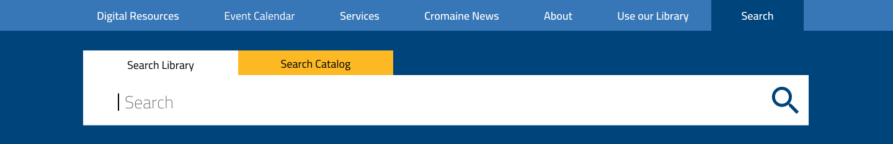
The Homepage
- Having analyzed what information users were actually using on the Homepage, we redesigned it so that only the most used resources and information were presented on the page, enhancing easy access to desired information.
- We simplified the layout of the Homepage, so that it could be easily updated and changed as the library's resources change over time.
- We demonstrated how the redesign would translate from Desktop to Mobile devices.
Old Homepage
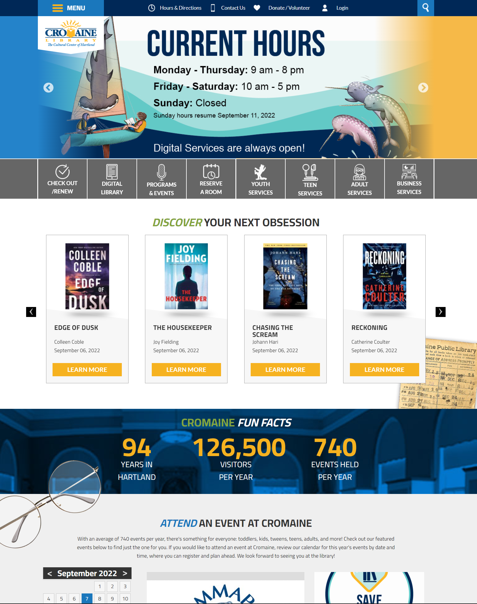Redesigned Desktop Homepage
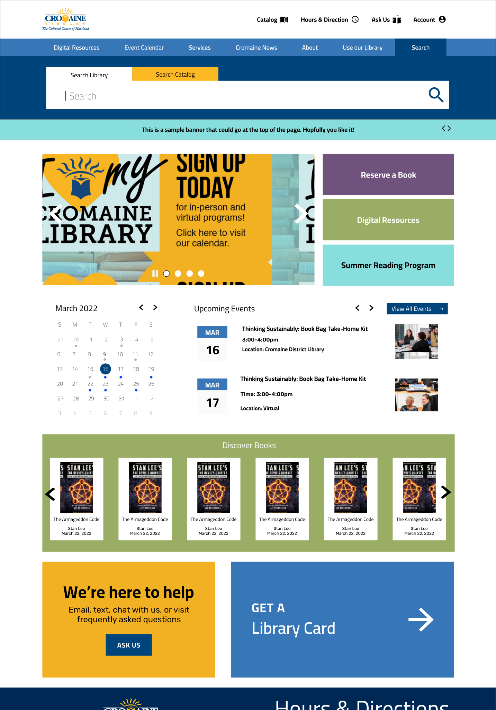Redesigned Mobile Homepage
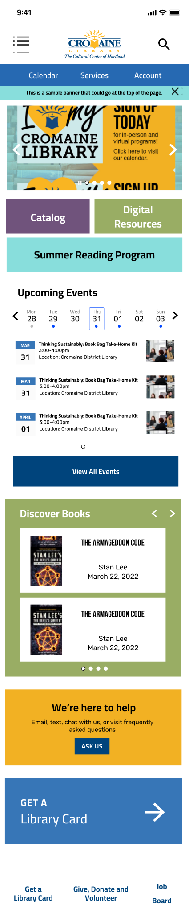Digital Resources
- On the original website, the library's digital resources (i.e., external websites that could be accessed through a Cromaine Library membership) could only be accessed through the unwieldy, visually overwhelming dropdown menu; there was no landing page for all of the digital resources.
- Prior to the redesign, each digital resource was only represented by its link name, lacking any description of what the resource offers.
- We added descriptions of the resources and also grouped them into categories, significantly enhancing the ease and efficacy of user search efforts.
Redesigned Digital Resources Homepage
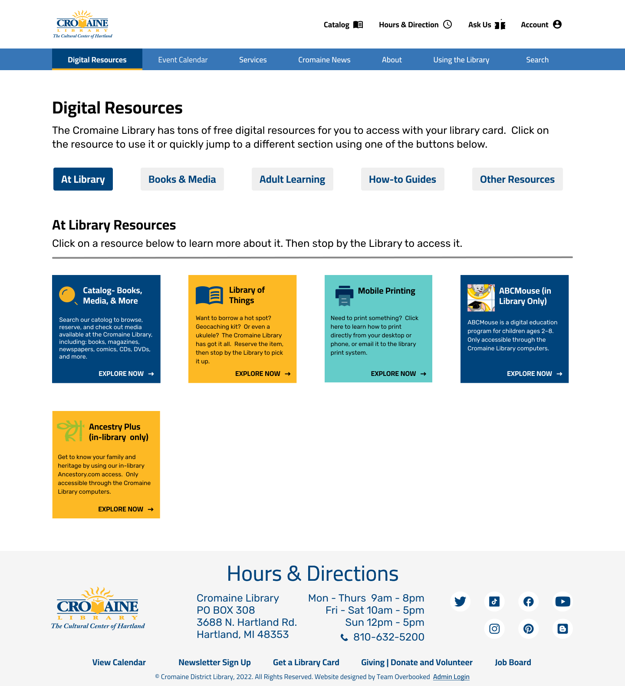Redesigned Digital Resources Mobile
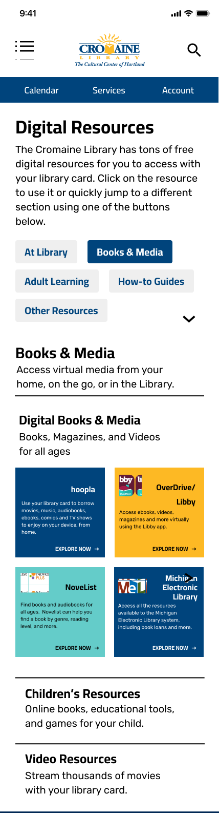Calendar
- We added a quick access panel for featured events that are picked out by library staff.
- We updated the calendar style so patrons could easily view upcoming events.
- We added a filter on the side of the page, to help users more easily access events of specific interest to them.
- We displayed a fixed number of events per page, to help users avoid too much frustrating vertical scrolling.
Old Calendar Page
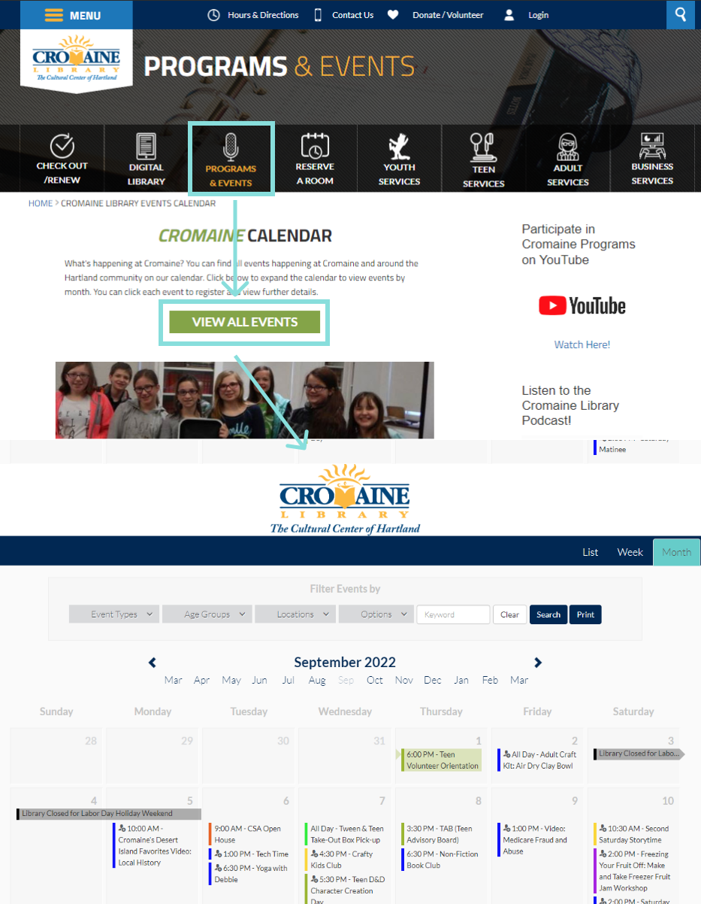Redesigned Calendar Page

Redesigned Mobile Calendar

Footer
- We designed a footer for the website, which did not previously have one, offering multiple versions - organizing the information in different designs- for the library to choose from. Much of the information in the footer was previously at the top of the page, creating information and visual clutter and confusion.
- The addition of a footer provided users with easy access to highly relevant information (e.g., hours, directions, phone numbers).
Footer designs for desktop
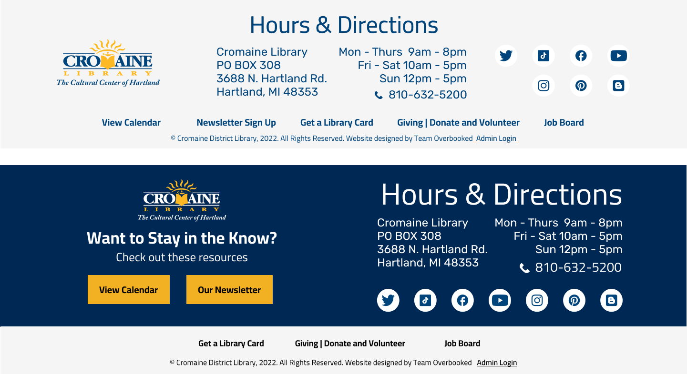Footer designs for mobile
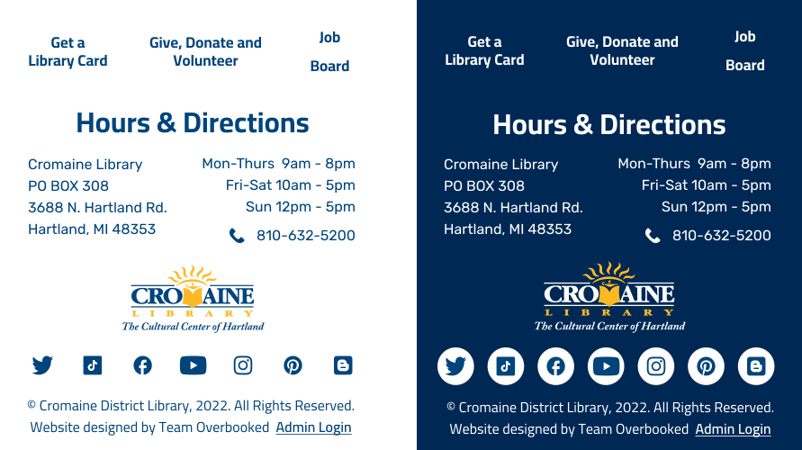Website Redesign as Inspiration: Immediate and Future Impacts
- The redesign was enthusiastically received by the library staff, who were humbly mindful of the challenges and frustrations the site presented to their patrons, and by the patrons themselves, who were eager to use their voices to improve this valued part of their community. Our redesign of the website's information architecture and most-used pages will be used by the library staff as inspiration and template for a large-scale redesign of their entire website.
- With our redesign as inspiration, the dedicated members of the Cromaine Library staff are excited to enhance their role in this rural community as a cultural and information hub, into one with increased accessibility, ease-of-use, and connectivity to the world outside of its physical walls.
- One staff member captured something in her pithy statement of appreciation, that we hoped we had infused our redesign with: "Thank you ALL for your professionalism, talent, and joy. We're so grateful for absolutely everything!" It was, indeed, a UX designer's joy to design an interface that would help people of all ages better and more enjoyably access information and events from within the heart of their own community, their own public library.
- Thank you to all the Cromaine Library staff and patrons for inviting us into your community!
- Cromain Redesign Team:
- Ben Greenberg
- Amy Engineer
- Mayank Kinger
- Xiaochen Shi
- Meghan Quigley